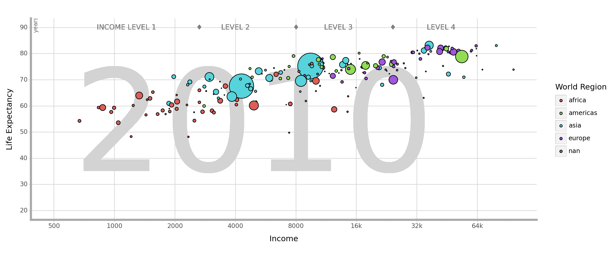
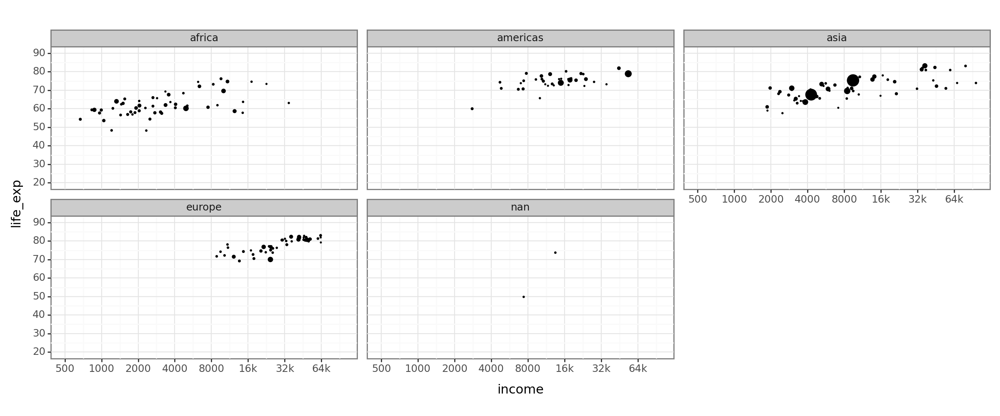
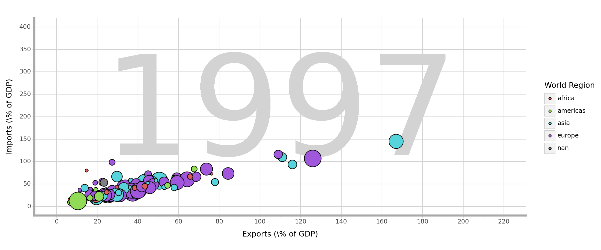
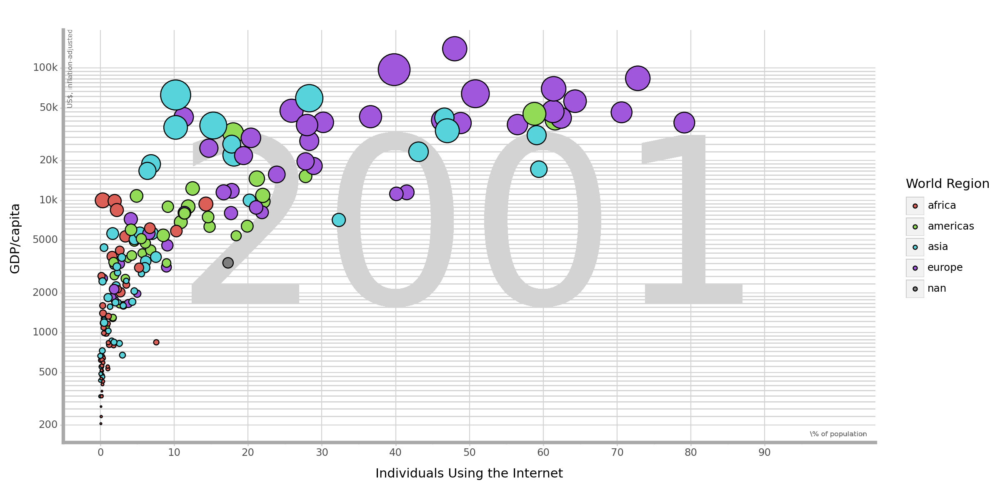
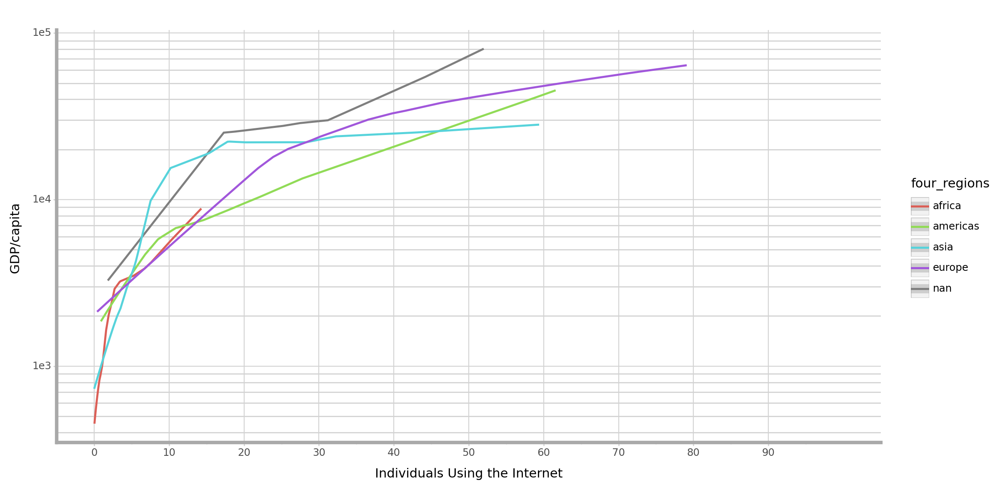

from plotnine import (
ggplot,
aes,
geom_point,
scale_x_continuous,
scale_x_discrete,
scale_y_continuous,
scale_y_discrete,
theme_bw,
theme,
scales,
ylim,
geom_text,
guides,
labs,
element_line,
element_blank,
scale_size,
guides,
scale_y_log10,
geom_violin,
geom_line,
facet_wrap,
geom_histogram,
geom_area,
geom_smooth,
geom_bar
)
import pandas as pd
import numpy as np
import mathLab 1
Lab 1 - Tuukka Jaakkola
Import Libraries
Task 1
#Import Data
data1 = pd.read_csv(r'C:\Users\tuke-\Desktop\1_GSB544_Computing_and_Machine_Learning\Week_1_Lab\data\q1data.csv')
#Scale the Income to have a doubling scale, couldn't scale the axis
data1['income'] = data1['income'].apply(np.log2)
#Plot 1
(ggplot(data1) +
#change the bakground to white
theme_bw() +
#Add all different floating labels
geom_text(label = '2010', x = 12.3, y = 50, size = 200, alpha = 0.5, color = 'lightgrey') +
geom_text(label = 'INCOME LEVEL 1' , x = 10.2, y = 90, size = 10, alpha = 0.01, color = 'grey') +
geom_text(label = '\u2666' , x = 11.4, y = 90, size = 10, alpha = 0.01, color = 'grey') +
geom_text(label = 'LEVEL 2' , x = 12, y = 90, size = 10, alpha = 0.01, color = 'grey') +
geom_text(label = '\u2666' , x = 13, y = 90, size = 10, alpha = 0.01, color = 'grey') +
geom_text(label = 'LEVEL 3' , x = 13.7, y = 90, size = 10, alpha = 0.01, color = 'grey') +
geom_text(label = '\u2666' , x = 14.6, y = 90, size = 10, alpha = 0.01, color = 'grey') +
geom_text(label = 'LEVEL 4' , x = 15.4, y = 90, size = 10, alpha = 0.01, color = 'grey') +
geom_text(label = 'years' , x = 8.7, y = 91, size = 8, alpha = 0.01, color = 'grey', angle = 90) +
#Add points with color and sizing
geom_point(aes(y='life_exp', x='income',size = 'population', fill = 'four_regions')) +
#Rename Axis
labs(x = 'Income', y = 'Life Expectancy', fill = 'World Region') +
#Scale and label y axis
scale_y_continuous(limits=(20,90),
breaks= [20,30,40,50,60,70,80,90],
labels = ['20','30','40','50','60','70','80','90']) +
#Scale and label x axis to double each tick
scale_x_continuous(limits= [9,16.6],
breaks= [9,10,11,12,13,14,15,16,17],
labels = ['500', '1000', '2000', '4000', '8000', '16k', '32k', '64k','']) +
#Make it look all nice
theme(
figure_size = (12,5),
line = element_line(color = 'lightgrey'),
panel_grid_minor_x = element_blank(),
panel_grid_minor_y = element_blank(),
axis_line=element_line(size=3, color = 'darkgrey'),
panel_border = element_blank()
) +
#Make dots bigger
scale_size(range=(0,20)) +
#Remove the legend for size
guides(size=False)
)
C:\Users\tuke-\anaconda3\Lib\site-packages\plotnine\layer.py:364: PlotnineWarning: geom_point : Removed 5 rows containing missing values.
<Figure Size: (1200 x 500)>Rough draft of an alternative way to reflect the graph in multiple seperated graphs. This allows for faster understanding of a single region, however, it makes it more difficult to compare regions to each other.
#Import Data
data1 = pd.read_csv(r'C:\Users\tuke-\Desktop\1_GSB544_Computing_and_Machine_Learning\Week_1_Lab\data\q1data.csv')
data1['income'] = data1['income'].apply(np.log2)
#Plot 1
(ggplot(data1) +
theme_bw() +
facet_wrap('four_regions') +
geom_point(aes(y='life_exp', x='income',size = 'population')) +
guides(size = False) +
theme(figure_size = (12,5)) +
scale_size(range=(0,5)) +
scale_y_continuous(limits=(20,90),
breaks= [20,30,40,50,60,70,80,90],
labels = ['20','30','40','50','60','70','80','90']) +
#Scale and label x axis to double each tick
scale_x_continuous(limits= [9,16.6],
breaks= [9,10,11,12,13,14,15,16,17],
labels = ['500', '1000', '2000', '4000', '8000', '16k', '32k', '64k',''])
)C:\Users\tuke-\anaconda3\Lib\site-packages\plotnine\layer.py:364: PlotnineWarning: geom_point : Removed 5 rows containing missing values.
<Figure Size: (1200 x 500)>Task 2
#Import Data
data2 = pd.read_csv(r'C:\Users\tuke-\Desktop\1_GSB544_Computing_and_Machine_Learning\Week_1_Lab\data\q2data.csv')
#Change values to numeric and delete any values that cannot be converted
data2['energy'] = pd.to_numeric(data2['energy'], errors = 'coerce')
#Plot
(ggplot(data2) +
#change the bakground to white
theme_bw() +
#Add all different floating labels
geom_text(label = '1997', x = 110, y = 200, size = 200, alpha = 0.5, color = 'lightgrey') +
#Add points with color and sizing
geom_point(aes(y='imports', x='exports',size = 'energy', fill = 'four_regions')) +
#Rename Axis
labs(x = 'Exports (\% of GDP)', y = 'Imports (\% of GDP)', fill = 'World Region') +
#Scale and label y axis
scale_y_continuous(limits=(0,400),
breaks= [0, 50, 100, 150, 200, 250, 300, 350, 400]) +
#Scale and label x axis
scale_x_continuous(limits=(0,220),
breaks= list(range(0,221,20))) +
#Make it look all nice
theme(
figure_size = (12,5),
line = element_line(color = 'lightgrey'),
panel_grid_minor_x = element_blank(),
panel_grid_minor_y = element_blank(),
axis_line=element_line(size=3, color = 'darkgrey'),
panel_border = element_blank()) +
#Remove the legend for size
guides(size=False) +
scale_size(range = [0, 15])
)C:\Users\tuke-\anaconda3\Lib\site-packages\plotnine\layer.py:364: PlotnineWarning: geom_point : Removed 80 rows containing missing values.
<Figure Size: (1200 x 500)>The following chart would be an easy and quick way to draw comparrisons between the different regions, at least as long as it comes to means, however, it won’t take into account the energy use and it does not offer much insight into the details of the data.
#Import Data
data2 = pd.read_csv(r'C:\Users\tuke-\Desktop\1_GSB544_Computing_and_Machine_Learning\Week_1_Lab\data\q2data.csv')
#Change values to numeric and delete any values that cannot be converted
data2['energy'] = pd.to_numeric(data2['energy'], errors = 'coerce')
#Plot
(ggplot(data2) +
#change the bakground to white
theme_bw() +
#Add all different floating labels
geom_text(label = '1997', x = 110, y = 200, size = 200, alpha = 0.5, color = 'lightgrey') +
#Add points with color and sizing
geom_boxplot(aes(y='imports', x = 'exports', fill = 'four_regions')) +
#Rename Axis
labs(x = 'Exports (\% of GDP)', y = 'Imports (\% of GDP)', color = 'World Region') +
#Scale and label y axis
scale_y_continuous(limits=(0,150),
breaks= [0, 50, 100, 150]) +
#Scale and label x axis
scale_x_continuous(limits=(40,140),
breaks= list(range(40,121,20))) +
#Make it look all nice
theme(
figure_size = (12,5),
line = element_line(color = 'lightgrey'),
panel_grid_minor_x = element_blank(),
panel_grid_minor_y = element_blank(),
axis_line=element_line(size=3, color = 'darkgrey'),
panel_border = element_blank()) +
#Remove the legend for size
guides(size=False) +
scale_size(range = [0, 15])
)C:\Users\tuke-\anaconda3\Lib\site-packages\plotnine\layer.py:284: PlotnineWarning: stat_boxplot : Removed 148 rows containing non-finite values.
C:\Users\tuke-\anaconda3\Lib\site-packages\plotnine\layer.py:344: PlotnineWarning: position_stack : Removed 206 rows containing missing values.
<Figure Size: (1200 x 500)>Task 3
#Import Data
data3 = pd.read_csv(r'C:\Users\tuke-\Desktop\1_GSB544_Computing_and_Machine_Learning\Week_1_Lab\data\q3data.csv')
#Plot
(ggplot(data3) +
#Add all different floating labels
geom_text(label = '2001', x = 50, y = np.log10(5000), size = 200, alpha = 0.5, color = 'lightgrey') +
geom_text(label = 'US$, inflation-adjusted' , x = -4, y = np.log10(100000), size = 6, alpha = 0.01, color = 'grey', angle = 90) +
geom_text(label = '\% of population' , x = 100, y = np.log10(170), size = 6, alpha = 0.01, color = 'grey') +
#change the bakground to white
theme_bw() +
#Add points with color and sizing
geom_point(aes(y='gdp', x='internet_users',size = 'income', fill = 'four_regions')) +
#Rename Axis
labs(x = 'Individuals Using the Internet', y = 'GDP/capita ', fill = 'World Region') +
#Scale and label y axis
scale_y_log10(
breaks = [200,500,1000,2000,5000, 10000,20000,50000,100000],
labels = ['200','500','1000', '2000', '5000', '10k', '20k', '50k', '100k']) +
#Scale and label x axis
scale_x_continuous(limits=(0,100),
breaks= list(range(0,100,10))) +
#Make it look all nice
theme(
figure_size = (12,6),
line = element_line(color = 'lightgrey'),
panel_grid_minor_x = element_blank(),
panel_grid_minor_y = element_line(color='lightgrey'),
axis_line=element_line(size=3, color = 'darkgrey'),
panel_border = element_blank()) +
#Remove the legend for size
guides(size=False) +
scale_size(range = [0, 15])
)C:\Users\tuke-\anaconda3\Lib\site-packages\plotnine\layer.py:364: PlotnineWarning: geom_point : Removed 32 rows containing missing values.
<Figure Size: (1200 x 600)>Another way to try and show the data, this is great for trying to estimate points that do not have data, however, it is also not the most visually pleasing look and once again, it is missing the “size” variable and in that way missing data.
#Import Data
data3 = pd.read_csv(r'C:\Users\tuke-\Desktop\1_GSB544_Computing_and_Machine_Learning\Week_1_Lab\data\q3data.csv')
#Plot
(ggplot(data3) +
#change the bakground to white
theme_bw() +
#Add points with color and sizing
geom_smooth(aes(y='gdp', x='internet_users', color = 'four_regions')) +
#Rename Axis
labs(x = 'Individuals Using the Internet', y = 'GDP/capita ', fill = 'World Region') +
#Scale and label y axis
scale_y_log10()+
# breaks = [200,500,1000,2000,5000, 10000,20000,50000,100000],
# labels = ['200','500','1000', '2000', '5000', '10k', '20k', '50k', '100k']) +
#Scale and label x axis
scale_x_continuous(limits=(0,100),
breaks= list(range(0,100,10))) +
#Make it look all nice
theme(
figure_size = (12,6),
line = element_line(color = 'lightgrey'),
panel_grid_minor_x = element_blank(),
panel_grid_minor_y = element_line(color='lightgrey'),
axis_line=element_line(size=3, color = 'darkgrey'),
panel_border = element_blank()) +
#Remove the legend for size
guides(size=False) +
scale_size(range = [0, 15])
)C:\Users\tuke-\anaconda3\Lib\site-packages\plotnine\stats\smoothers.py:330: PlotnineWarning: Confidence intervals are not yet implemented for lowess smoothings.
C:\Users\tuke-\anaconda3\Lib\site-packages\plotnine\stats\smoothers.py:330: PlotnineWarning: Confidence intervals are not yet implemented for lowess smoothings.
C:\Users\tuke-\anaconda3\Lib\site-packages\plotnine\stats\smoothers.py:330: PlotnineWarning: Confidence intervals are not yet implemented for lowess smoothings.
C:\Users\tuke-\anaconda3\Lib\site-packages\plotnine\stats\smoothers.py:330: PlotnineWarning: Confidence intervals are not yet implemented for lowess smoothings.
C:\Users\tuke-\anaconda3\Lib\site-packages\plotnine\stats\smoothers.py:330: PlotnineWarning: Confidence intervals are not yet implemented for lowess smoothings.
<Figure Size: (1200 x 600)>